Aula 09 Modificadores de Classe, Encapsulamento e Atributos de Classe
Arquivo original: Aula 09 Modificadores de Classe, Encapsulamento e Atributos de Classe.pdf
Página 1
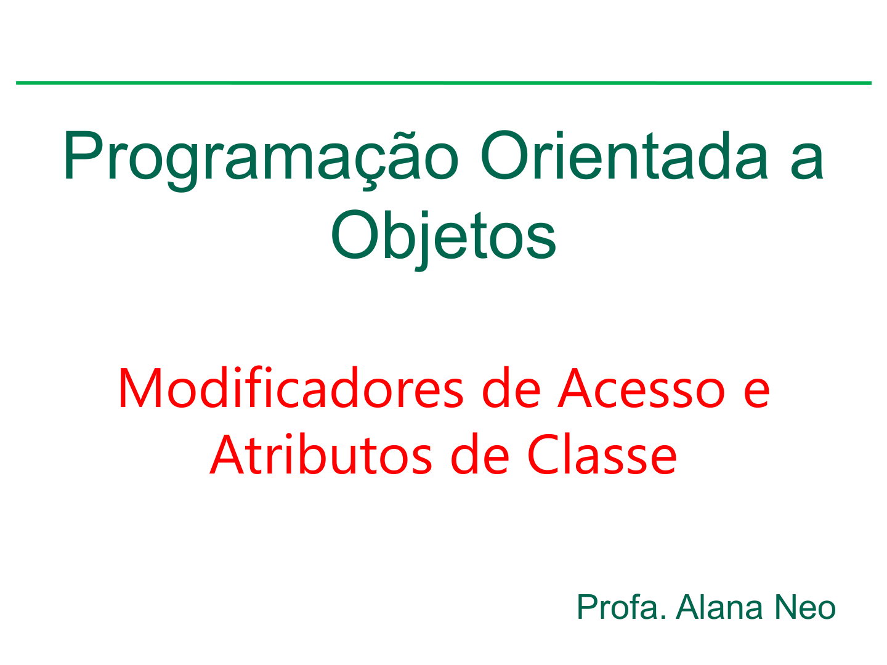
Programação Orientada a Objetos
Modificadores de Acesso e Atributos de Classe
Profa. Alana NeoPágina 2
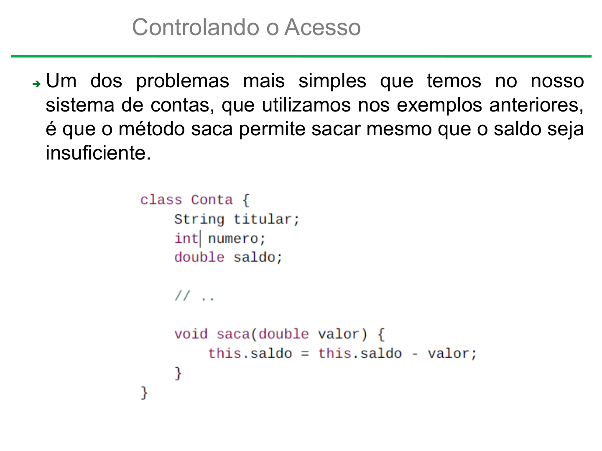
Controlando o Acesso
➔Um dos problemas mais simples que temos no nosso sistema de contas, que utilizamos nos exemplos anteriores, é que o método saca permite sacar mesmo que o saldo seja insuficiente.
Página 3
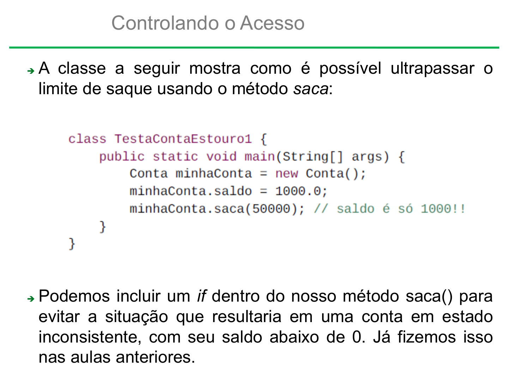
Controlando o Acesso
➔A classe a seguir mostra como é possível ultrapassar o limite de saque usando o método saca:
➔Podemos incluir um if dentro do nosso método saca() para evitar a situação que resultaria em uma conta em estado inconsistente, com seu saldo abaixo de 0. Já fizemos isso nas aulas anteriores.
Página 4
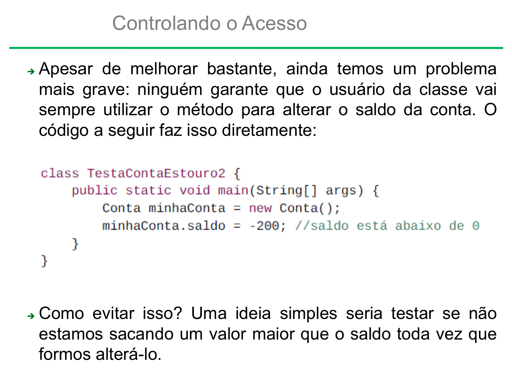
Controlando o Acesso
➔Apesar de melhorar bastante, ainda temos um problema mais grave: ninguém garante que o usuário da classe vai sempre utilizar o método para alterar o saldo da conta. O código a seguir faz isso diretamente:
➔Como evitar isso? Uma ideia simples seria testar se não estamos sacando um valor maior que o saldo toda vez que formos alterá-lo.
Página 5
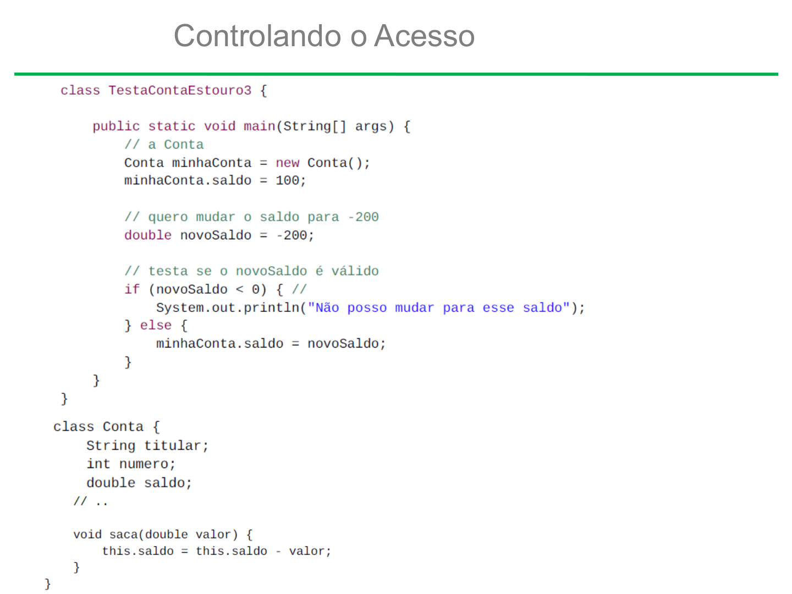
Controlando o Acesso
Página 6
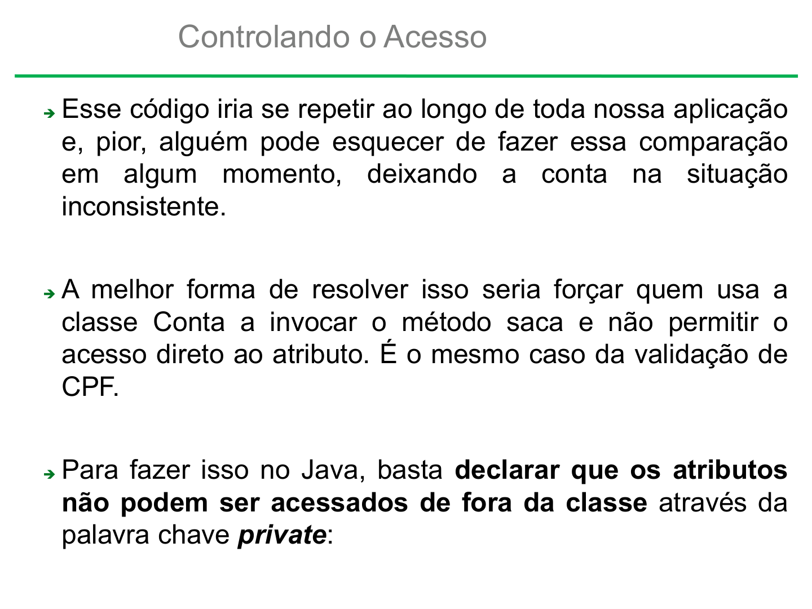
Controlando o Acesso
➔Esse código iria se repetir ao longo de toda nossa aplicação e, pior, alguém pode esquecer de fazer essa comparação em algum momento, deixando a conta na situação inconsistente.
➔A melhor forma de resolver isso seria forçar quem usa a classe Conta a invocar o método saca e não permitir o acesso direto ao atributo. É o mesmo caso da validação de CPF.
➔Para fazer isso no Java, basta declarar que os atributos não podem ser acessados de fora da classe através da palavra chave private:
Página 7
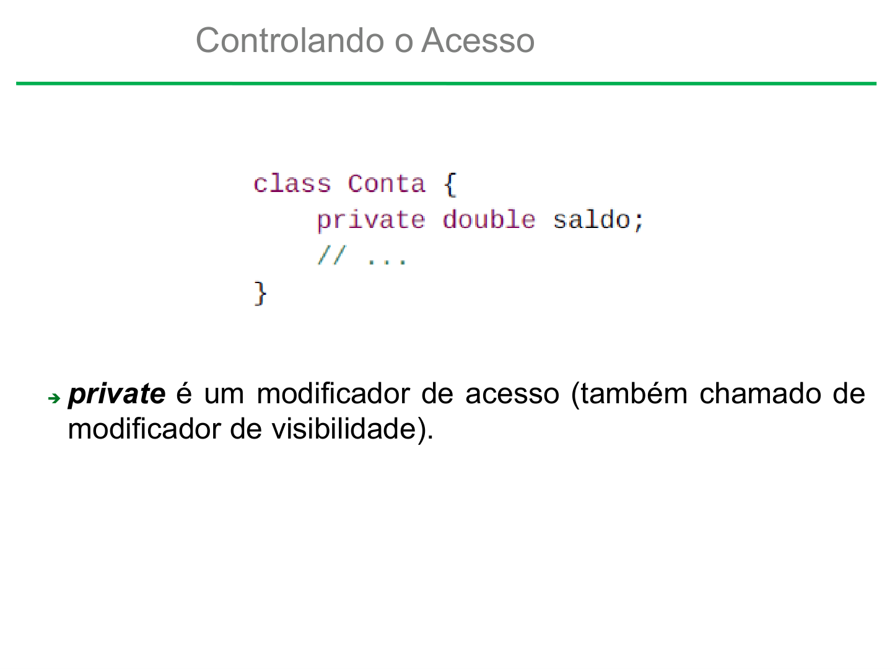
Controlando o Acesso
➔private é um modificador de acesso (também chamado de modificador de visibilidade).
Página 8
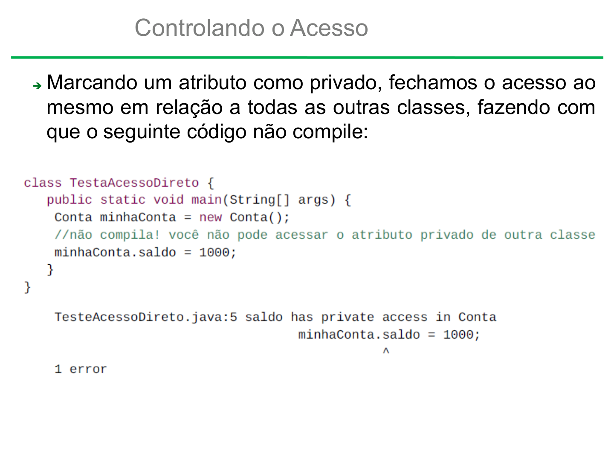
Controlando o Acesso
➔Marcando um atributo como privado, fechamos o acesso ao mesmo em relação a todas as outras classes, fazendo com que o seguinte código não compile:
Página 9
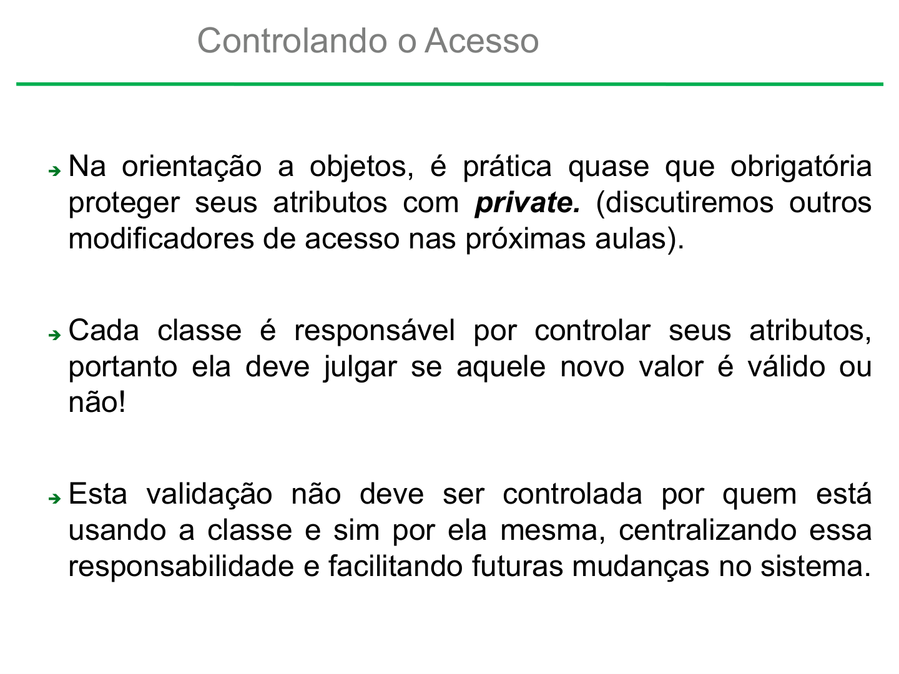
Controlando o Acesso
➔Na orientação a objetos, é prática quase que obrigatória proteger seus atributos com private. (discutiremos outros modificadores de acesso nas próximas aulas).
➔Cada classe é responsável por controlar seus atributos, portanto ela deve julgar se aquele novo valor é válido ou não!
➔Esta validação não deve ser controlada por quem está usando a classe e sim por ela mesma, centralizando essa responsabilidade e facilitando futuras mudanças no sistema.
Página 10
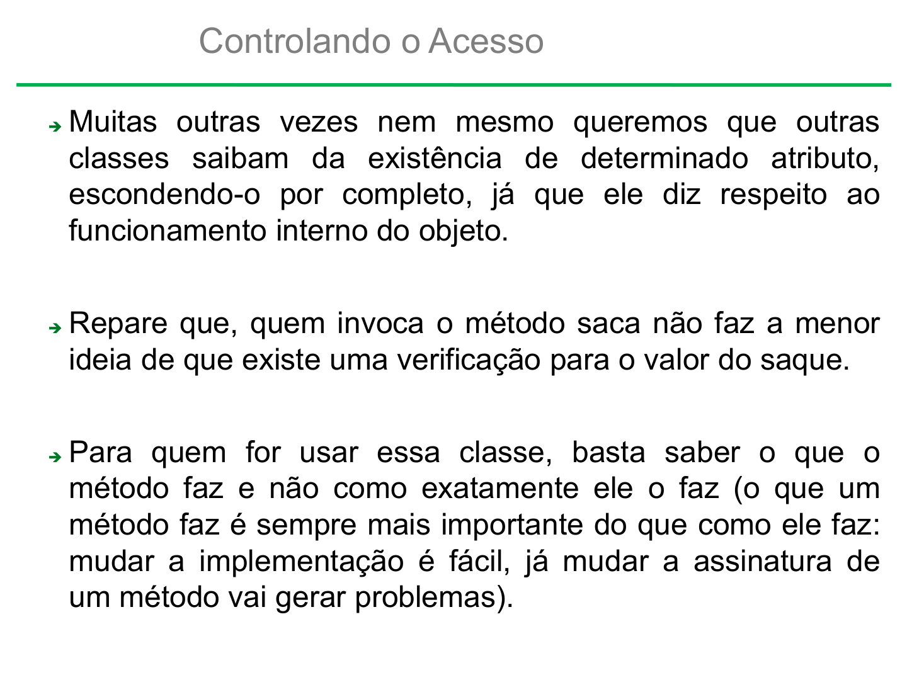
Controlando o Acesso
➔Muitas outras vezes nem mesmo queremos que outras classes saibam da existência de determinado atributo, escondendo-o por completo, já que ele diz respeito ao funcionamento interno do objeto.
➔Repare que, quem invoca o método saca não faz a menor ideia de que existe uma verificação para o valor do saque.
➔Para quem for usar essa classe, basta saber o que o método faz e não como exatamente ele o faz (o que um método faz é sempre mais importante do que como ele faz: mudar a implementação é fácil, já mudar a assinatura de um método vai gerar problemas).
Página 11
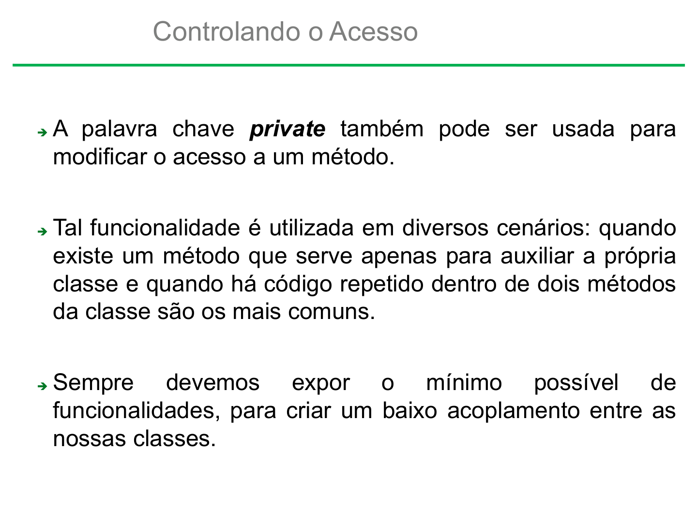
Controlando o Acesso
➔A palavra chave private também pode ser usada para modificar o acesso a um método.
➔Tal funcionalidade é utilizada em diversos cenários: quando existe um método que serve apenas para auxiliar a própria classe e quando há código repetido dentro de dois métodos da classe são os mais comuns.
➔Sempre devemos expor o mínimo possível de funcionalidades, para criar um baixo acoplamento entre as nossas classes.
Página 12
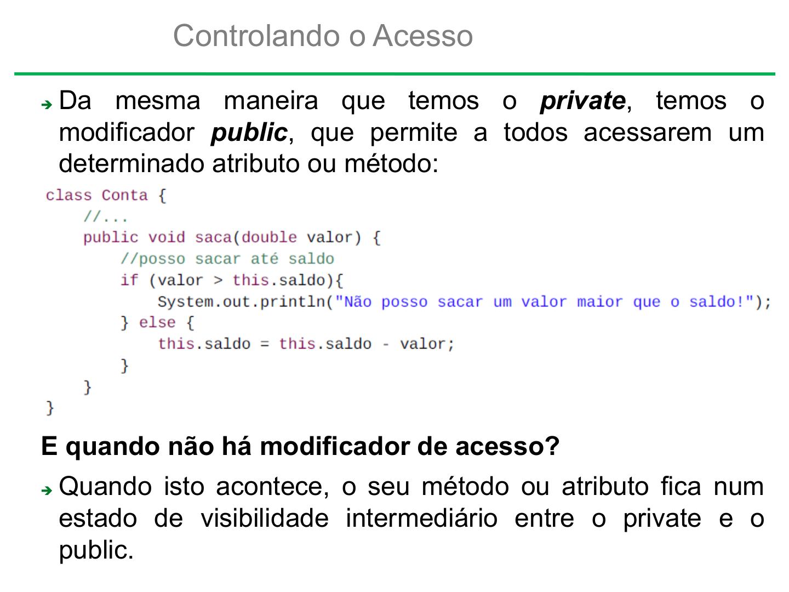
Controlando o Acesso
➔Da mesma maneira que temos o private, temos o modificador public, que permite a todos acessarem um determinado atributo ou método:
E quando não há modificador de acesso? ➔Quando isto acontece, o seu método ou atributo fica num estado de visibilidade intermediário entre o private e o public.
Página 13
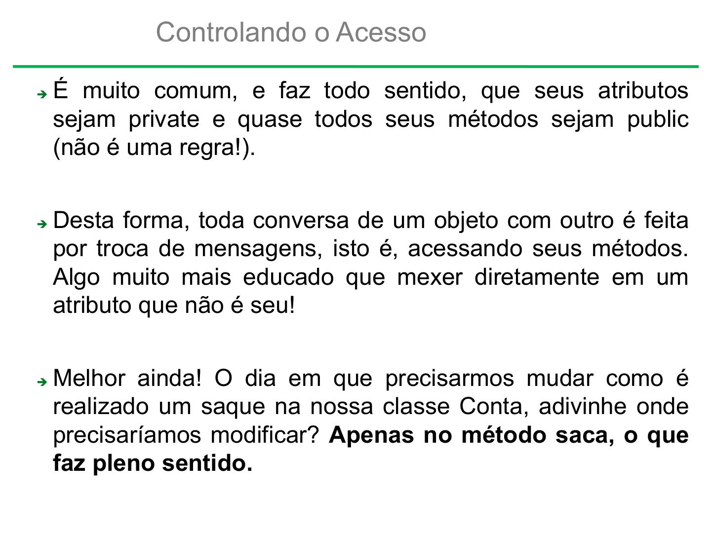
Controlando o Acesso
➔É muito comum, e faz todo sentido, que seus atributos sejam private e quase todos seus métodos sejam public (não é uma regra!).
➔Desta forma, toda conversa de um objeto com outro é feita por troca de mensagens, isto é, acessando seus métodos. Algo muito mais educado que mexer diretamente em um atributo que não é seu!
➔Melhor ainda! O dia em que precisarmos mudar como é realizado um saque na nossa classe Conta, adivinhe onde precisaríamos modificar? Apenas no método saca, o que faz pleno sentido.
Página 14
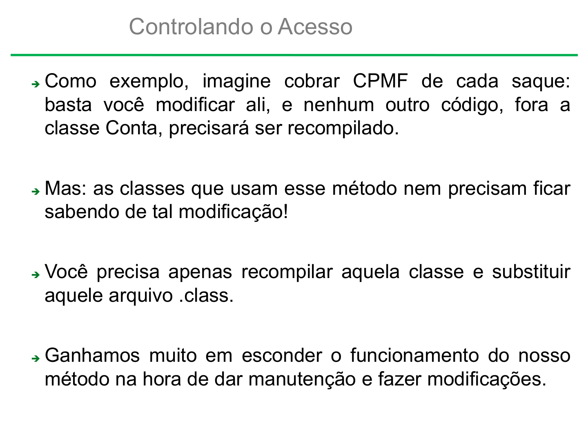
Controlando o Acesso
➔Como exemplo, imagine cobrar CPMF de cada saque: basta você modificar ali, e nenhum outro código, fora a classe Conta, precisará ser recompilado.
➔Mas: as classes que usam esse método nem precisam ficar sabendo de tal modificação!
➔Você precisa apenas recompilar aquela classe e substituir aquele arquivo .class.
➔Ganhamos muito em esconder o funcionamento do nosso método na hora de dar manutenção e fazer modificações.
Página 15
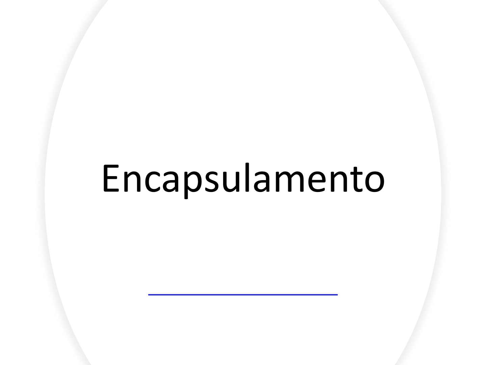
Encapsulamento
Página 16
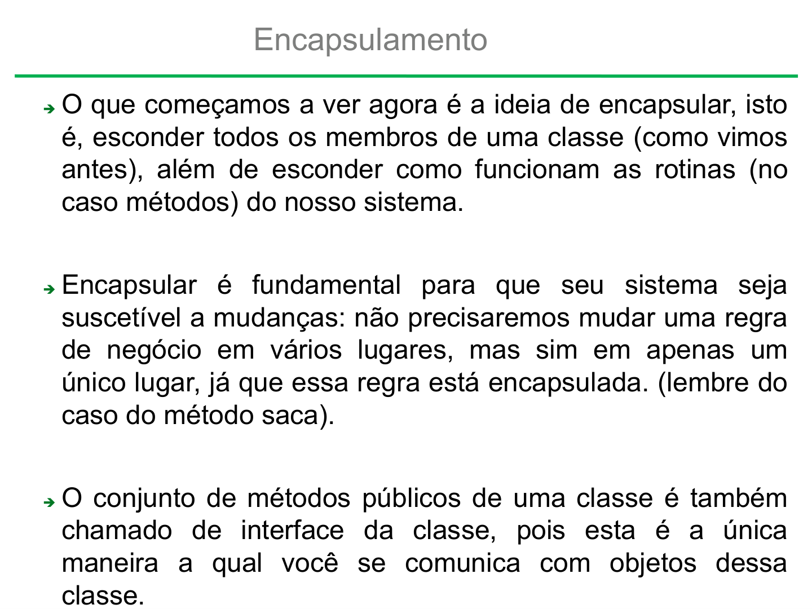
Encapsulamento
➔O que começamos a ver agora é a ideia de encapsular, isto é, esconder todos os membros de uma classe (como vimos antes), além de esconder como funcionam as rotinas (no caso métodos) do nosso sistema.
➔Encapsular é fundamental para que seu sistema seja suscetível a mudanças: não precisaremos mudar uma regra de negócio em vários lugares, mas sim em apenas um único lugar, já que essa regra está encapsulada. (lembre do caso do método saca).
➔O conjunto de métodos públicos de uma classe é também chamado de interface da classe, pois esta é a única maneira a qual você se comunica com objetos dessa classe.
Página 17
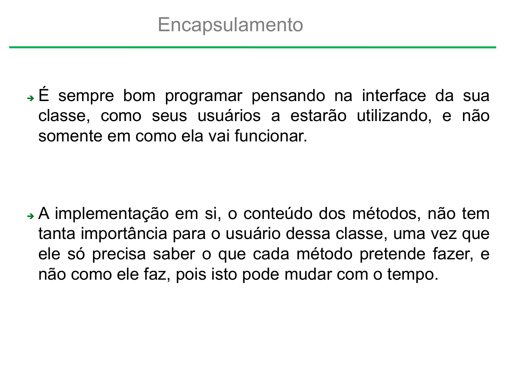
Encapsulamento
➔É sempre bom programar pensando na interface da sua classe, como seus usuários a estarão utilizando, e não somente em como ela vai funcionar.
➔A implementação em si, o conteúdo dos métodos, não tem tanta importância para o usuário dessa classe, uma vez que ele só precisa saber o que cada método pretende fazer, e não como ele faz, pois isto pode mudar com o tempo.
Página 18
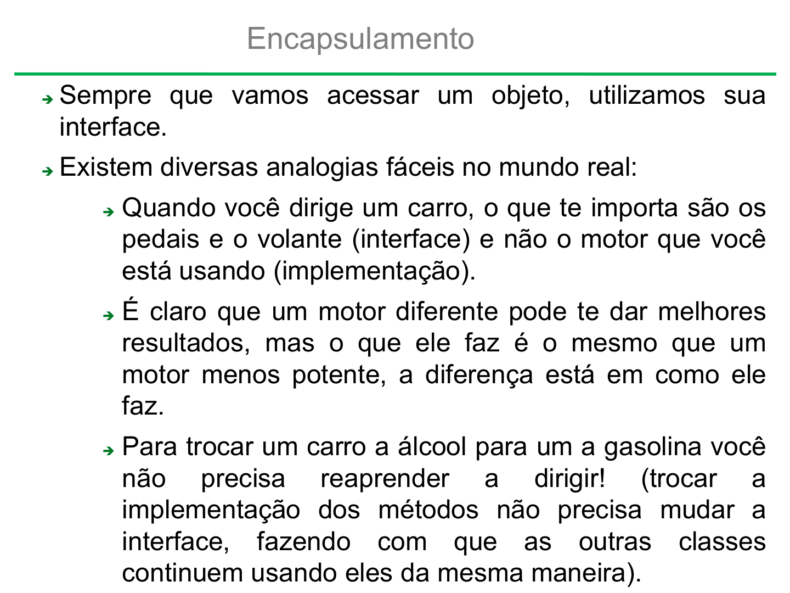
Encapsulamento
➔Sempre que vamos acessar um objeto, utilizamos sua interface. ➔Existem diversas analogias fáceis no mundo real: ➔Quando você dirige um carro, o que te importa são os pedais e o volante (interface) e não o motor que você está usando (implementação). ➔É claro que um motor diferente pode te dar melhores resultados, mas o que ele faz é o mesmo que um motor menos potente, a diferença está em como ele faz. ➔Para trocar um carro a álcool para um a gasolina você não precisa reaprender a dirigir! (trocar a implementação dos métodos não precisa mudar a interface, fazendo com que as outras classes continuem usando eles da mesma maneira).
Página 19
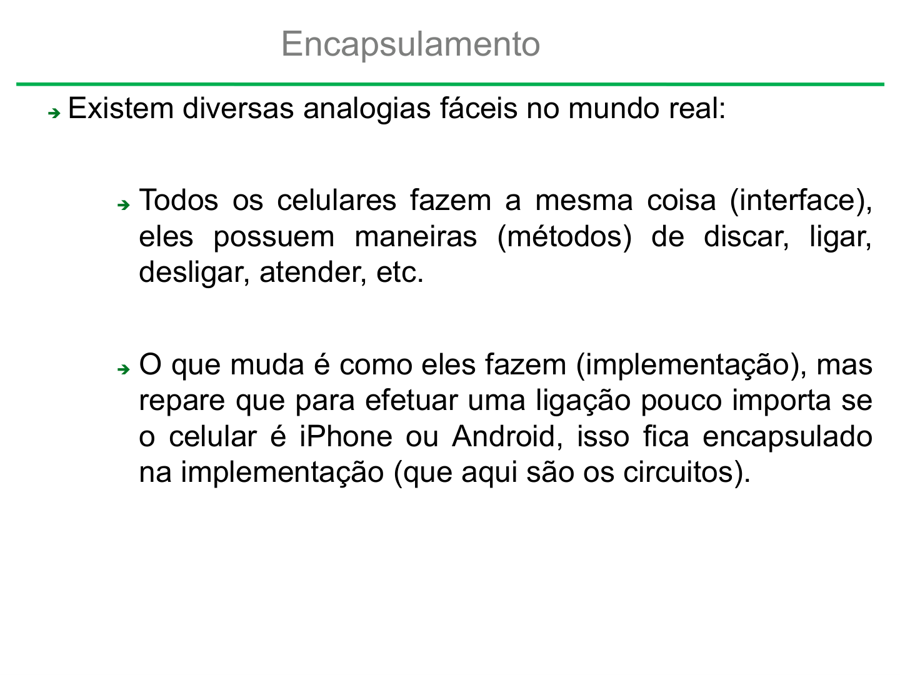
Encapsulamento
➔Existem diversas analogias fáceis no mundo real:
➔Todos os celulares fazem a mesma coisa (interface),
eles possuem maneiras (métodos) de discar, ligar,
desligar, atender, etc.➔O que muda é como eles fazem (implementação), mas repare que para efetuar uma ligação pouco importa se o celular é iPhone ou Android, isso fica encapsulado na implementação (que aqui são os circuitos).
Página 20
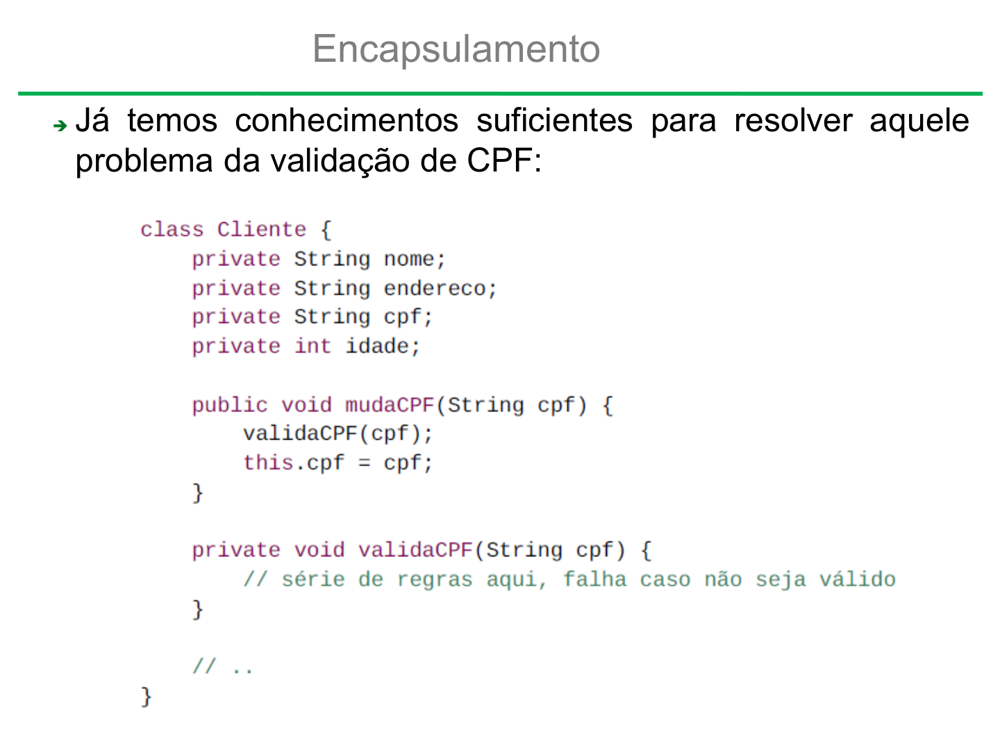
Encapsulamento
➔Já temos conhecimentos suficientes para resolver aquele problema da validação de CPF:
Página 21
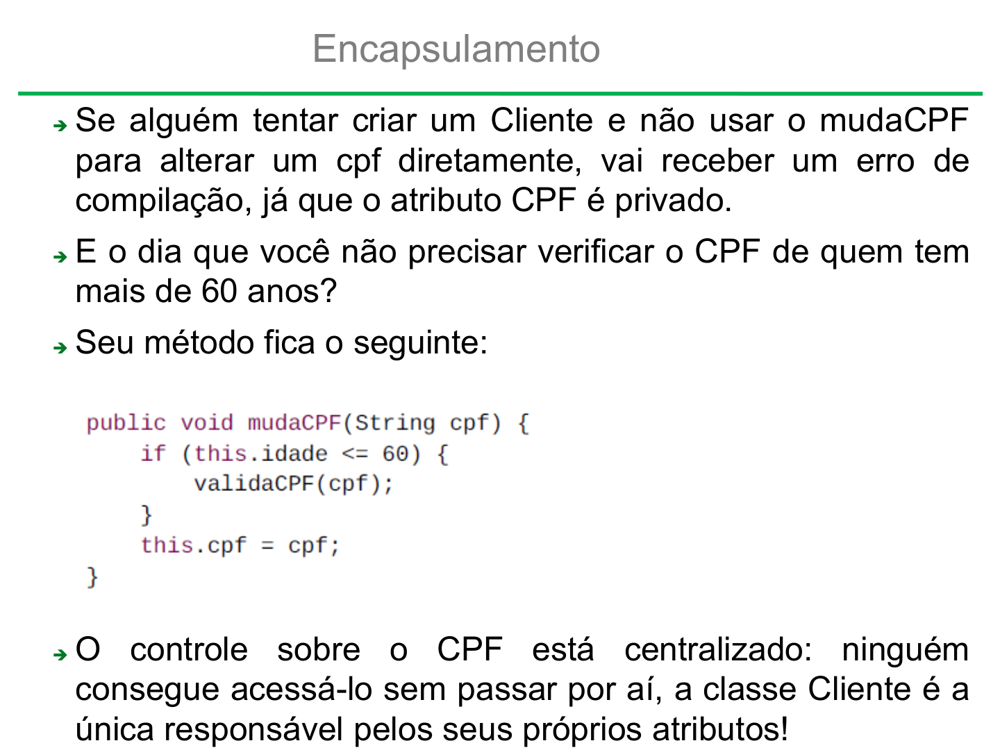
Encapsulamento
➔Se alguém tentar criar um Cliente e não usar o mudaCPF para alterar um cpf diretamente, vai receber um erro de compilação, já que o atributo CPF é privado. ➔E o dia que você não precisar verificar o CPF de quem tem mais de 60 anos? ➔Seu método fica o seguinte:
➔O controle sobre o CPF está centralizado: ninguém consegue acessá-lo sem passar por aí, a classe Cliente é a única responsável pelos seus próprios atributos!
Página 22
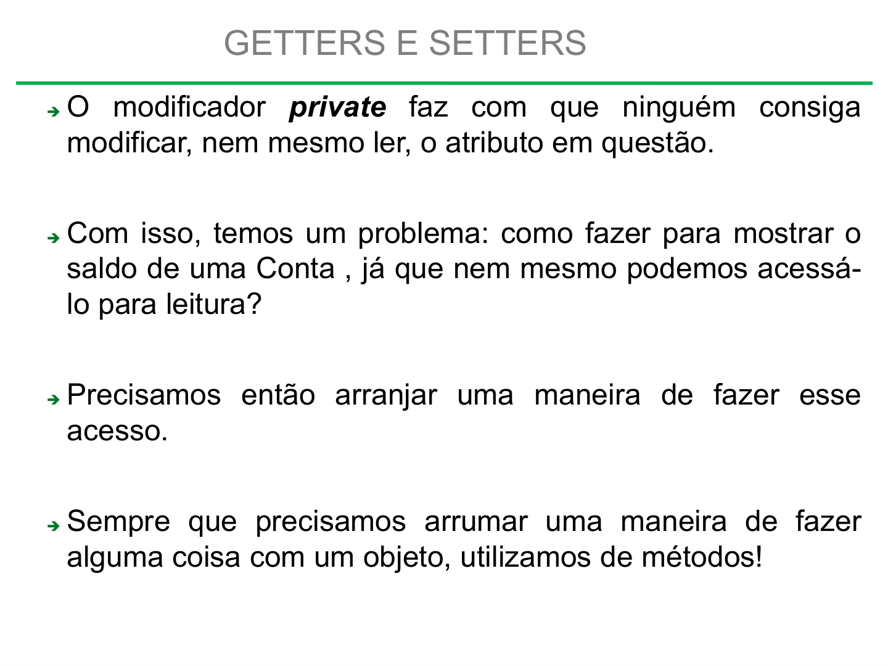
GETTERS E SETTERS
➔O modificador private faz com que ninguém consiga modificar, nem mesmo ler, o atributo em questão.
➔Com isso, temos um problema: como fazer para mostrar o saldo de uma Conta , já que nem mesmo podemos acessá- lo para leitura?
➔Precisamos então arranjar uma maneira de fazer esse acesso.
➔Sempre que precisamos arrumar uma maneira de fazer alguma coisa com um objeto, utilizamos de métodos!
Página 23
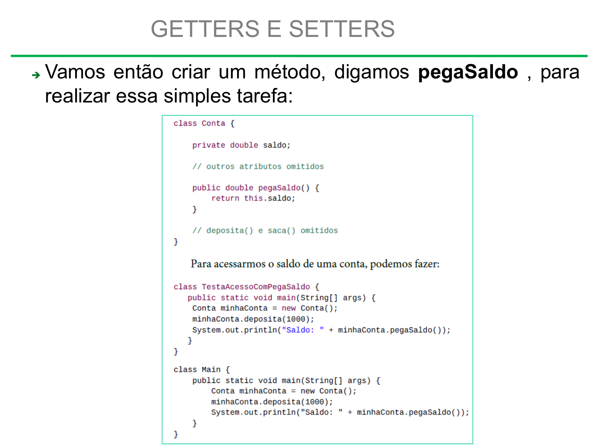
GETTERS E SETTERS
➔Vamos então criar um método, digamos pegaSaldo , para realizar essa simples tarefa:
Página 24
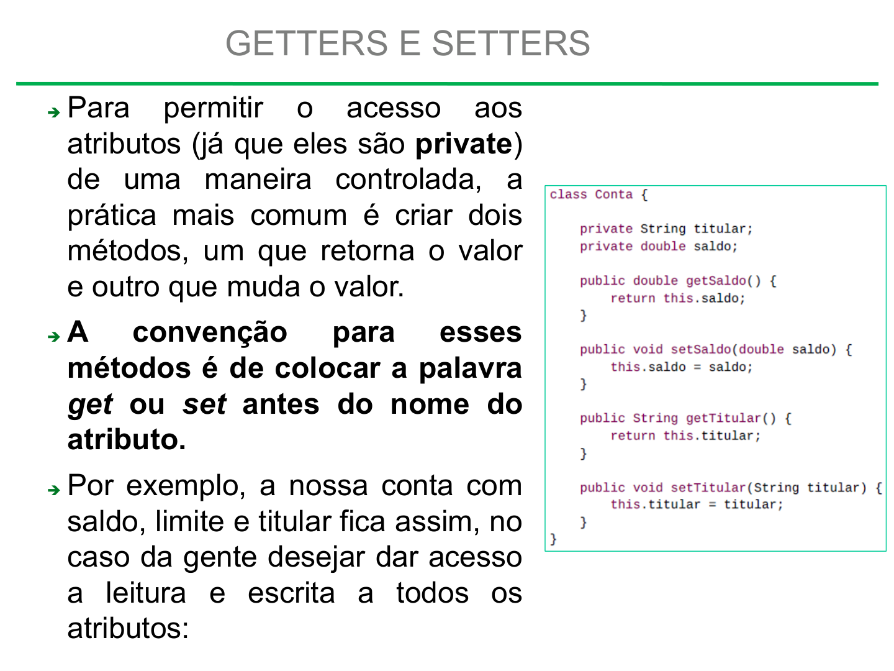
GETTERS E SETTERS
➔Para permitir o acesso aos atributos (já que eles são private) de uma maneira controlada, a prática mais comum é criar dois métodos, um que retorna o valor e outro que muda o valor. ➔A convenção para esses métodos é de colocar a palavra get ou set antes do nome do atributo. ➔Por exemplo, a nossa conta com saldo, limite e titular fica assim, no caso da gente desejar dar acesso a leitura e escrita a todos os atributos:
Página 25
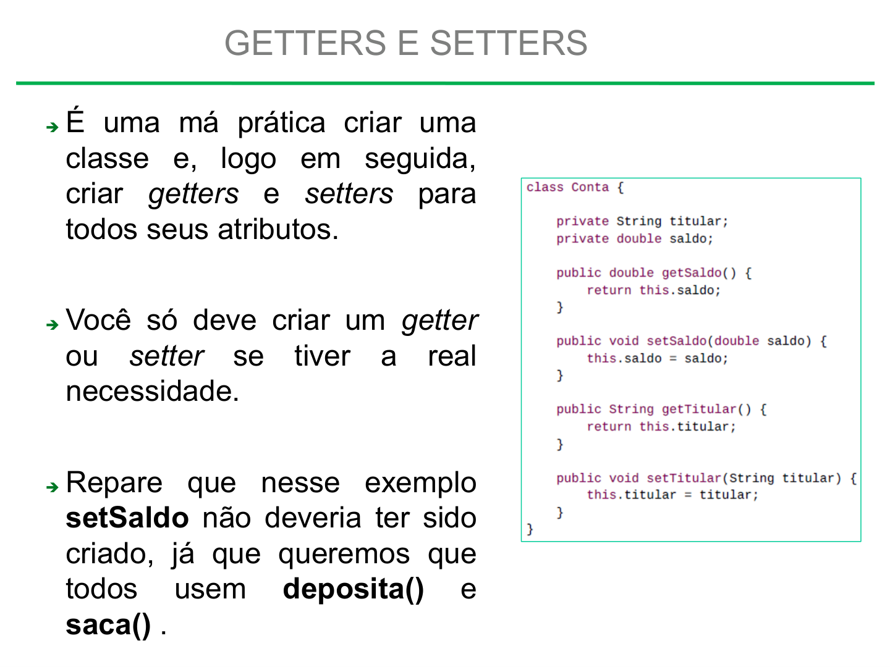
GETTERS E SETTERS
➔É uma má prática criar uma classe e, logo em seguida, criar getters e setters para todos seus atributos.
➔Você só deve criar um getter ou setter se tiver a real necessidade.
➔Repare que nesse exemplo setSaldo não deveria ter sido criado, já que queremos que todos usem deposita() e saca() .
Página 26
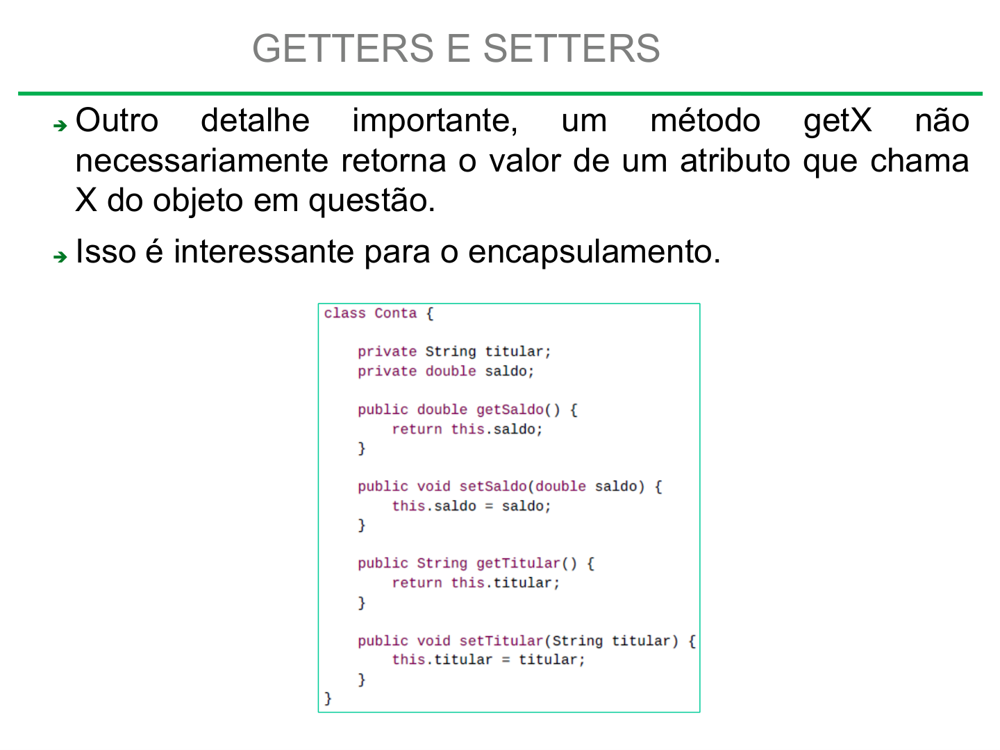
GETTERS E SETTERS
➔Outro detalhe importante, um método getX não necessariamente retorna o valor de um atributo que chama X do objeto em questão. ➔Isso é interessante para o encapsulamento.
Página 27
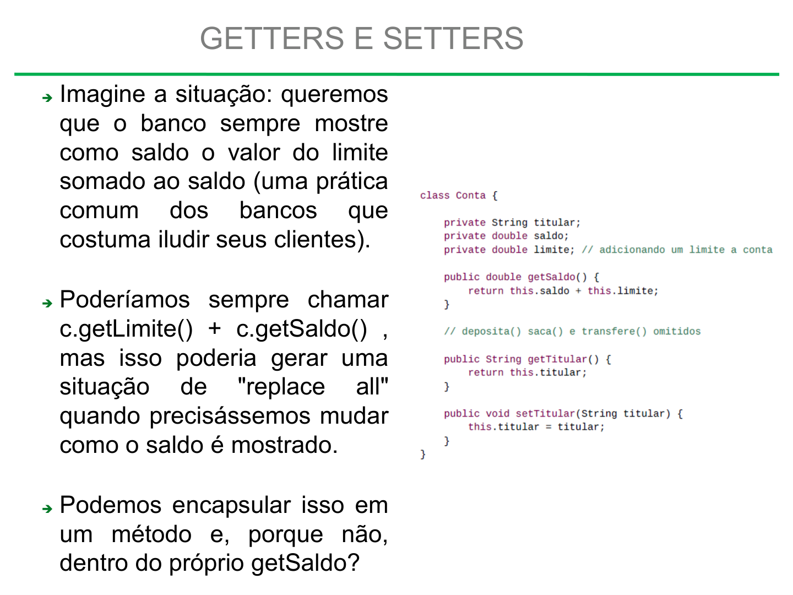
GETTERS E SETTERS
➔Imagine a situação: queremos que o banco sempre mostre como saldo o valor do limite somado ao saldo (uma prática comum dos bancos que costuma iludir seus clientes).
➔Poderíamos sempre chamar c.getLimite() + c.getSaldo() , mas isso poderia gerar uma situação de “replace all” quando precisássemos mudar como o saldo é mostrado.
➔Podemos encapsular isso em um método e, porque não, dentro do próprio getSaldo?
Página 28
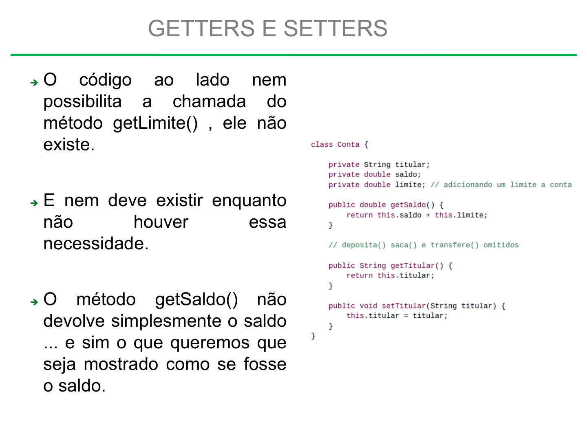
GETTERS E SETTERS
➔O código ao lado nem possibilita a chamada do método getLimite() , ele não existe.
➔E nem deve existir enquanto não houver essa necessidade.
➔O método getSaldo() não devolve simplesmente o saldo … e sim o que queremos que seja mostrado como se fosse o saldo.
Página 29
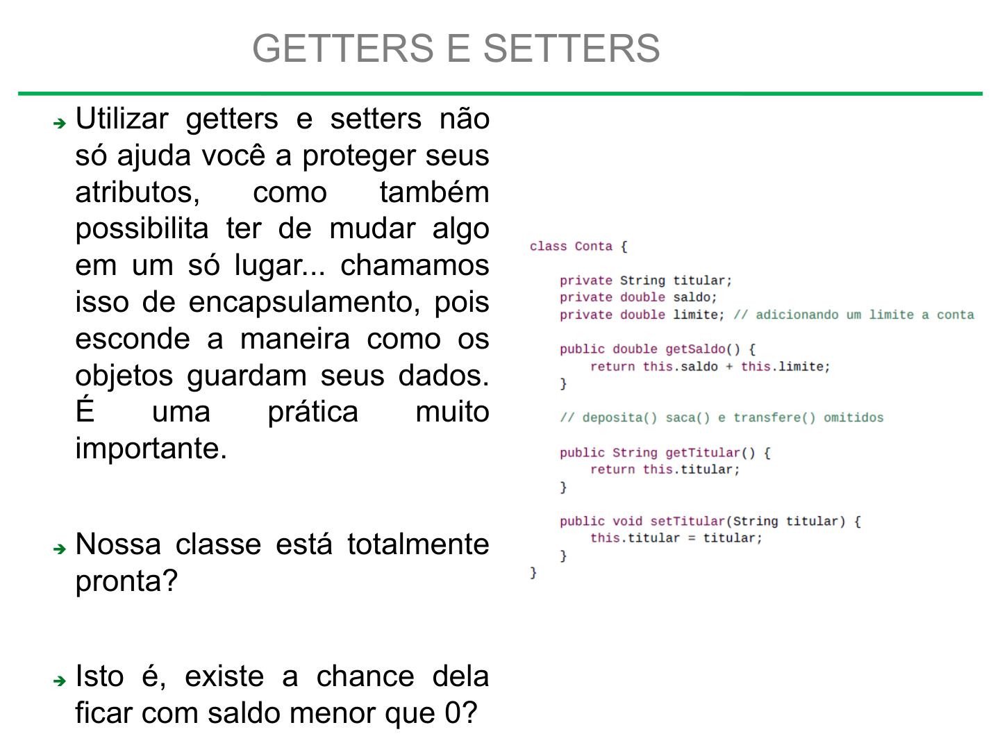
GETTERS E SETTERS
➔Utilizar getters e setters não só ajuda você a proteger seus atributos, como também possibilita ter de mudar algo em um só lugar… chamamos isso de encapsulamento, pois esconde a maneira como os objetos guardam seus dados. É uma prática muito importante.
➔Nossa classe está totalmente pronta?
➔Isto é, existe a chance dela ficar com saldo menor que 0?
Página 30
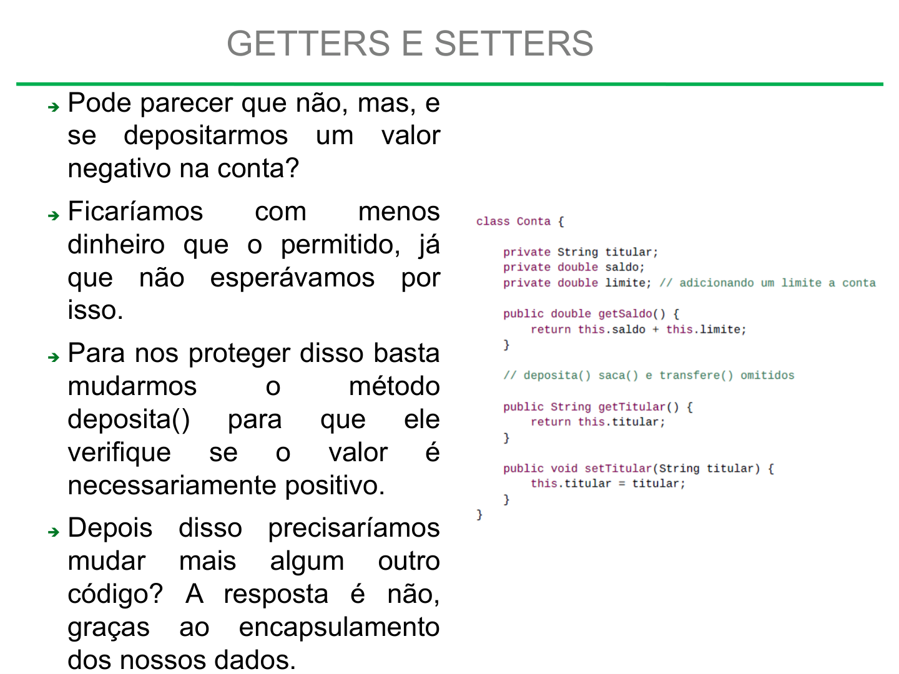
GETTERS E SETTERS
➔Pode parecer que não, mas, e se depositarmos um valor negativo na conta? ➔Ficaríamos com menos dinheiro que o permitido, já que não esperávamos por isso. ➔Para nos proteger disso basta mudarmos o método deposita() para que ele verifique se o valor é necessariamente positivo. ➔Depois disso precisaríamos mudar mais algum outro código? A resposta é não, graças ao encapsulamento dos nossos dados.
Página 31
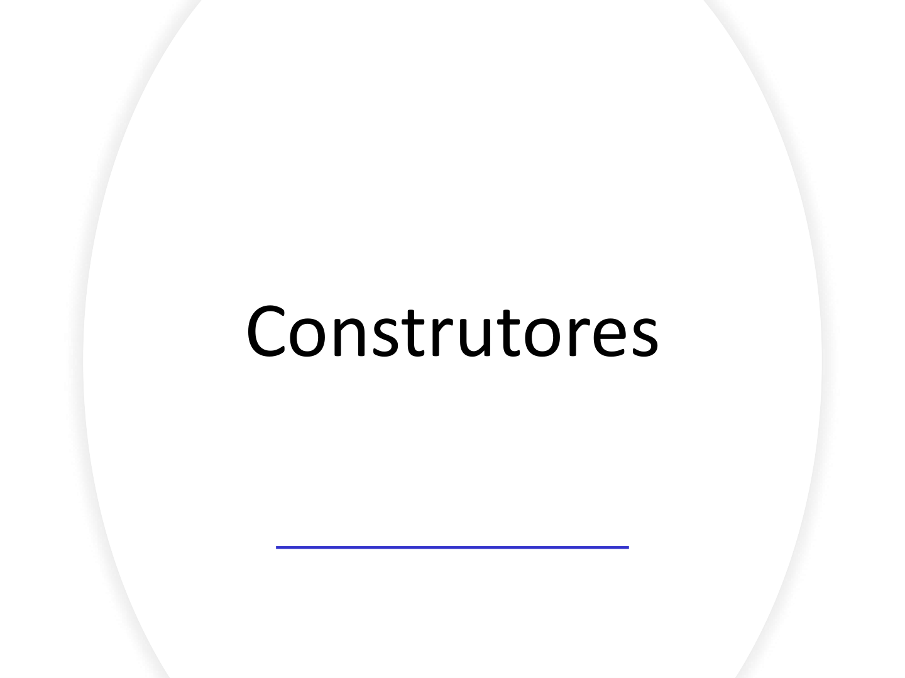
Construtores
Página 32
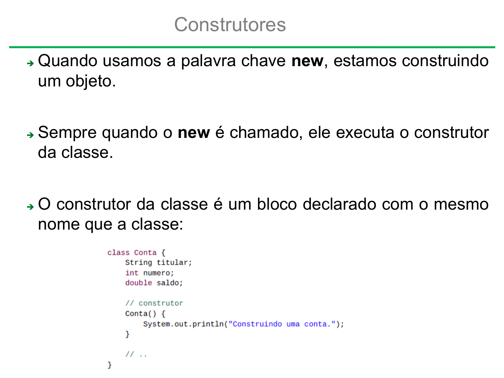
Construtores
➔Quando usamos a palavra chave new, estamos construindo um objeto.
➔Sempre quando o new é chamado, ele executa o construtor da classe.
➔O construtor da classe é um bloco declarado com o mesmo nome que a classe:
Página 33
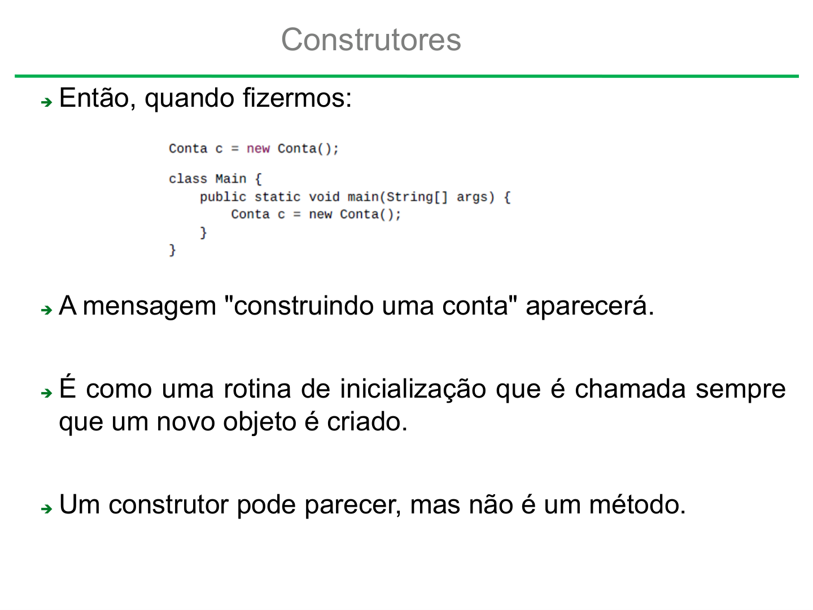
Construtores
➔Então, quando fizermos:
➔A mensagem “construindo uma conta” aparecerá.
➔É como uma rotina de inicialização que é chamada sempre que um novo objeto é criado.
➔Um construtor pode parecer, mas não é um método.
Página 34
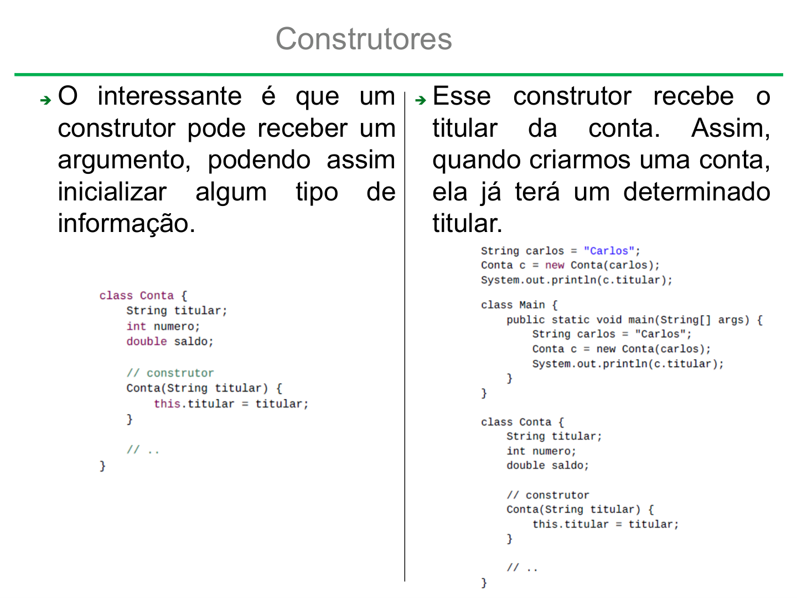
Construtores
➔O interessante é que um ➔Esse construtor recebe o construtor pode receber um titular da conta. Assim, argumento, podendo assim quando criarmos uma conta, inicializar algum tipo de ela já terá um determinado informação. titular.
Página 35
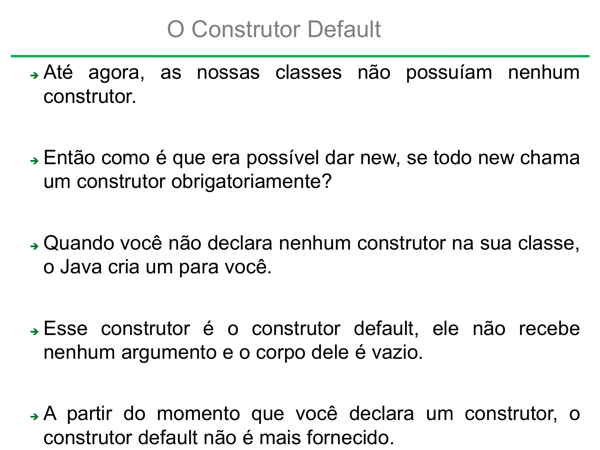
O Construtor Default
➔Até agora, as nossas classes não possuíam nenhum construtor.
➔Então como é que era possível dar new, se todo new chama um construtor obrigatoriamente?
➔Quando você não declara nenhum construtor na sua classe, o Java cria um para você.
➔Esse construtor é o construtor default, ele não recebe nenhum argumento e o corpo dele é vazio.
➔A partir do momento que você declara um construtor, o construtor default não é mais fornecido.
Página 36
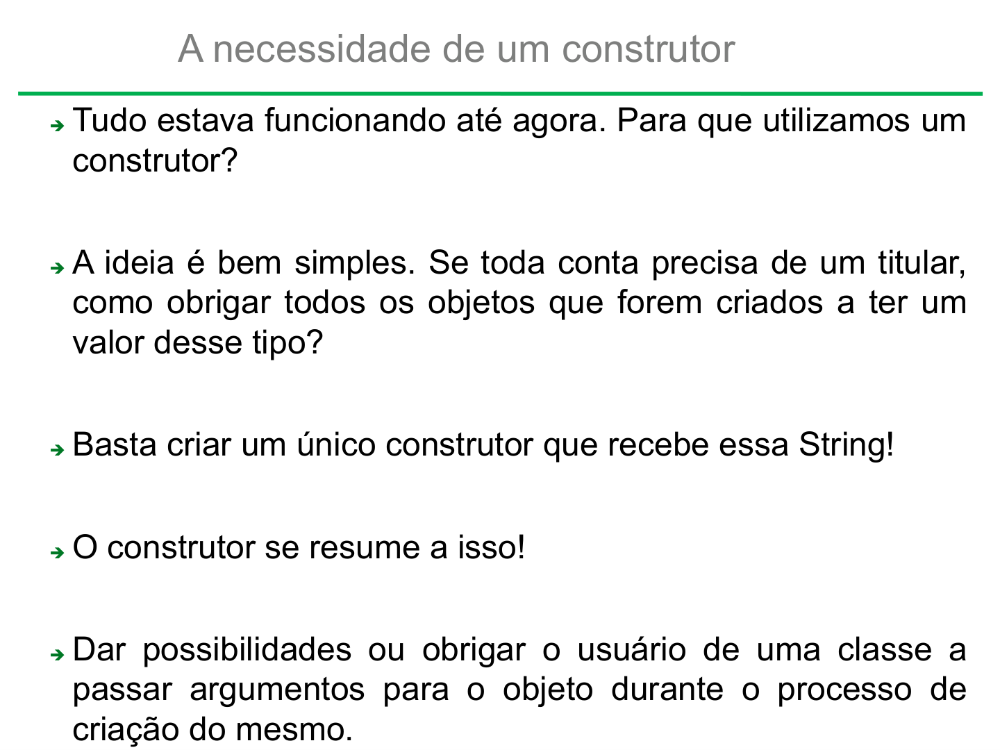
A necessidade de um construtor
➔Tudo estava funcionando até agora. Para que utilizamos um construtor?
➔A ideia é bem simples. Se toda conta precisa de um titular, como obrigar todos os objetos que forem criados a ter um valor desse tipo?
➔Basta criar um único construtor que recebe essa String!
➔O construtor se resume a isso!
➔Dar possibilidades ou obrigar o usuário de uma classe a passar argumentos para o objeto durante o processo de criação do mesmo.
Página 37
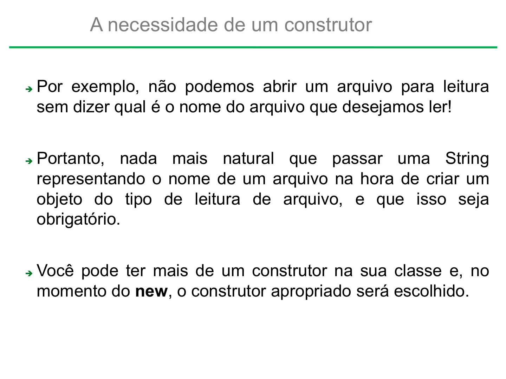
A necessidade de um construtor
➔Por exemplo, não podemos abrir um arquivo para leitura sem dizer qual é o nome do arquivo que desejamos ler!
➔Portanto, nada mais natural que passar uma String representando o nome de um arquivo na hora de criar um objeto do tipo de leitura de arquivo, e que isso seja obrigatório.
➔Você pode ter mais de um construtor na sua classe e, no momento do new, o construtor apropriado será escolhido.
Página 38
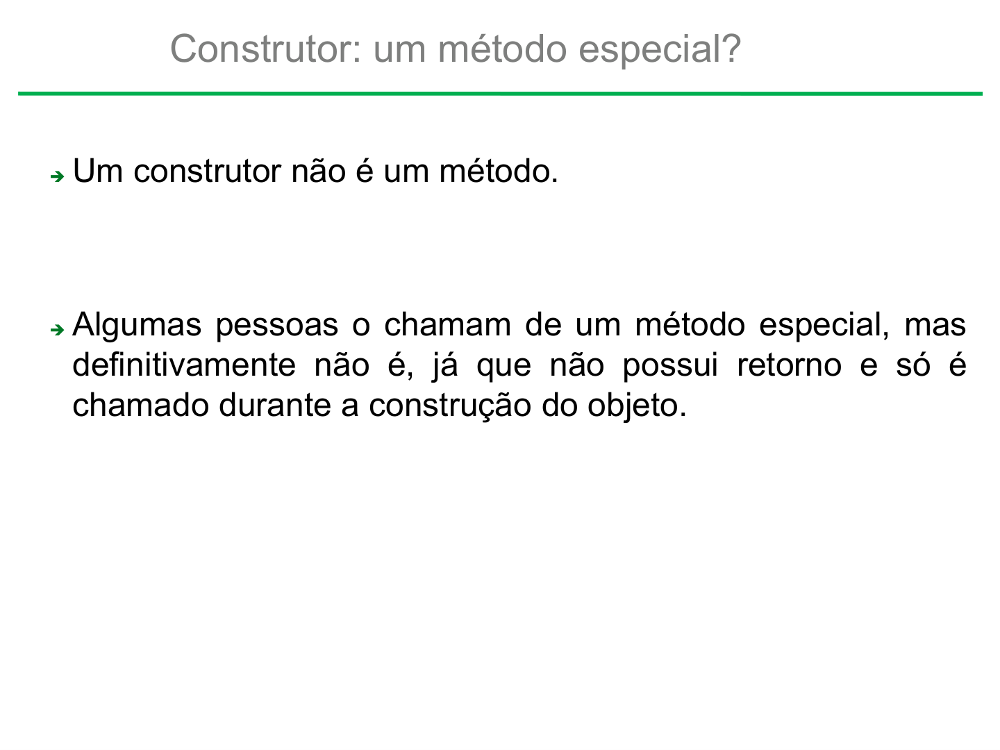
Construtor: um método especial?
➔Um construtor não é um método.
➔Algumas pessoas o chamam de um método especial, mas definitivamente não é, já que não possui retorno e só é chamado durante a construção do objeto.
Página 39
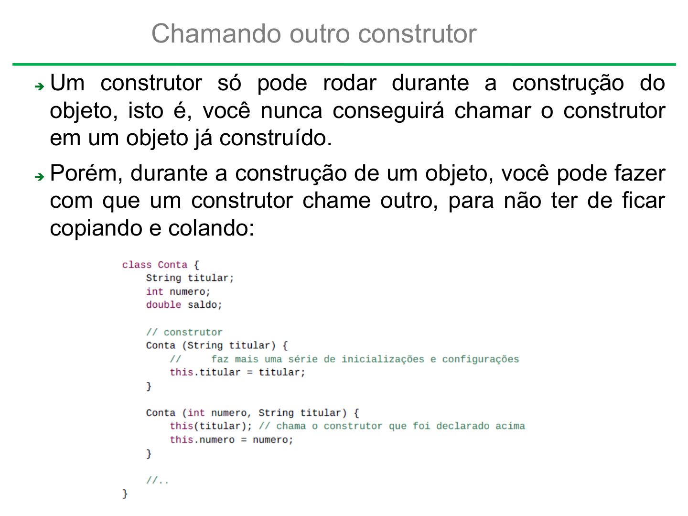
Chamando outro construtor
➔Um construtor só pode rodar durante a construção do objeto, isto é, você nunca conseguirá chamar o construtor em um objeto já construído. ➔Porém, durante a construção de um objeto, você pode fazer com que um construtor chame outro, para não ter de ficar copiando e colando:
Página 40
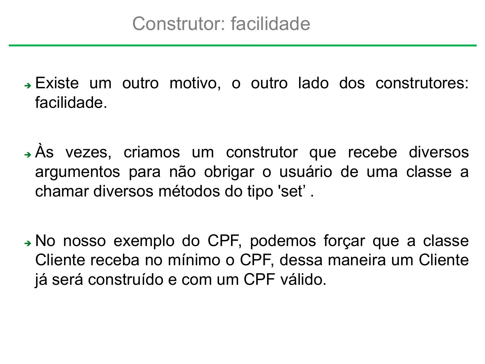
Construtor: facilidade
➔Existe um outro motivo, o outro lado dos construtores: facilidade.
➔Às vezes, criamos um construtor que recebe diversos argumentos para não obrigar o usuário de uma classe a chamar diversos métodos do tipo ‘set’ .
➔No nosso exemplo do CPF, podemos forçar que a classe Cliente receba no mínimo o CPF, dessa maneira um Cliente já será construído e com um CPF válido.
Página 41
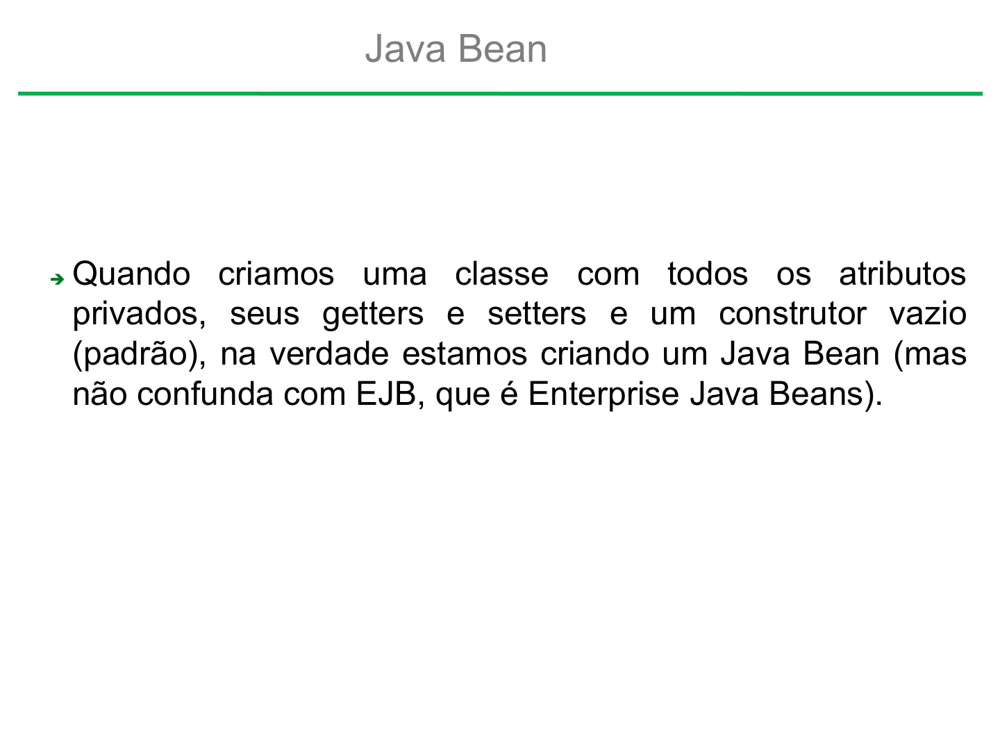
Java Bean
➔Quando criamos uma classe com todos os atributos privados, seus getters e setters e um construtor vazio (padrão), na verdade estamos criando um Java Bean (mas não confunda com EJB, que é Enterprise Java Beans).
Página 42
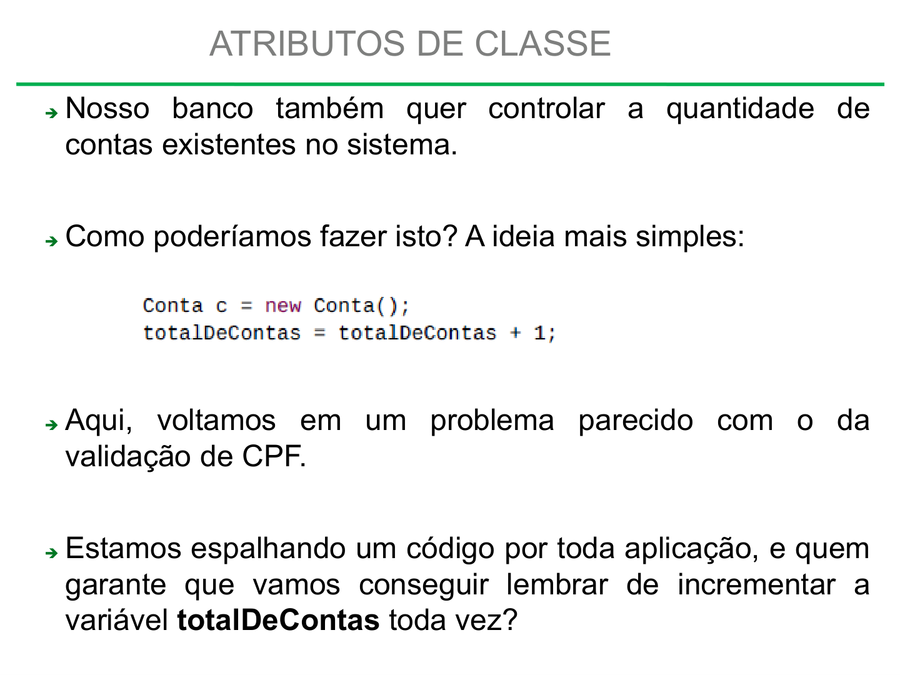
ATRIBUTOS DE CLASSE
➔Nosso banco também quer controlar a quantidade de contas existentes no sistema.
➔Como poderíamos fazer isto? A ideia mais simples:
➔Aqui, voltamos em um problema parecido com o da validação de CPF.
➔Estamos espalhando um código por toda aplicação, e quem garante que vamos conseguir lembrar de incrementar a variável totalDeContas toda vez?
Página 43
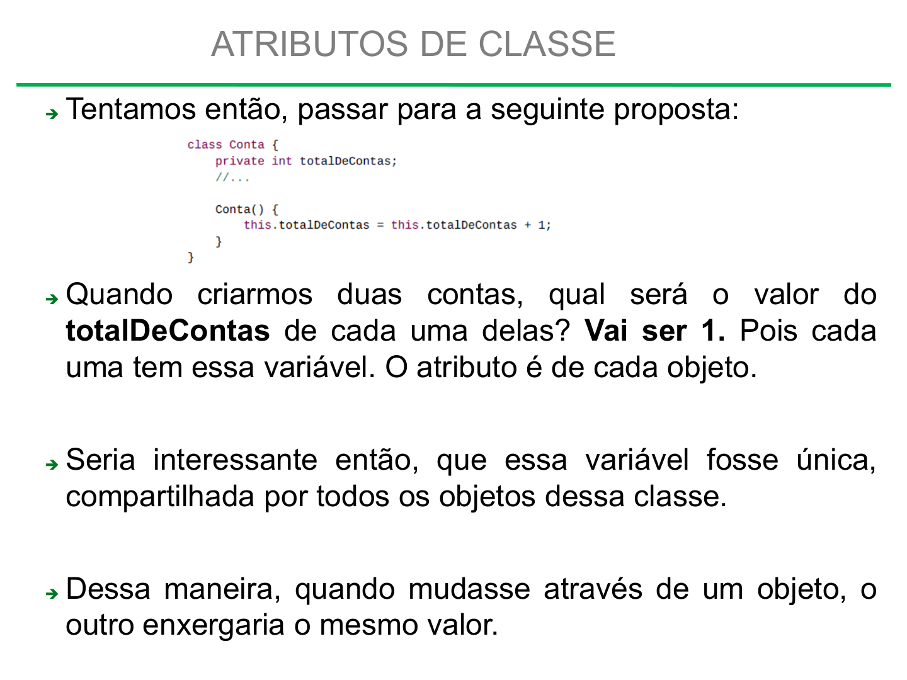
ATRIBUTOS DE CLASSE
➔Tentamos então, passar para a seguinte proposta:
➔Quando criarmos duas contas, qual será o valor do totalDeContas de cada uma delas? Vai ser 1. Pois cada uma tem essa variável. O atributo é de cada objeto.
➔Seria interessante então, que essa variável fosse única, compartilhada por todos os objetos dessa classe.
➔Dessa maneira, quando mudasse através de um objeto, o outro enxergaria o mesmo valor.
Página 44
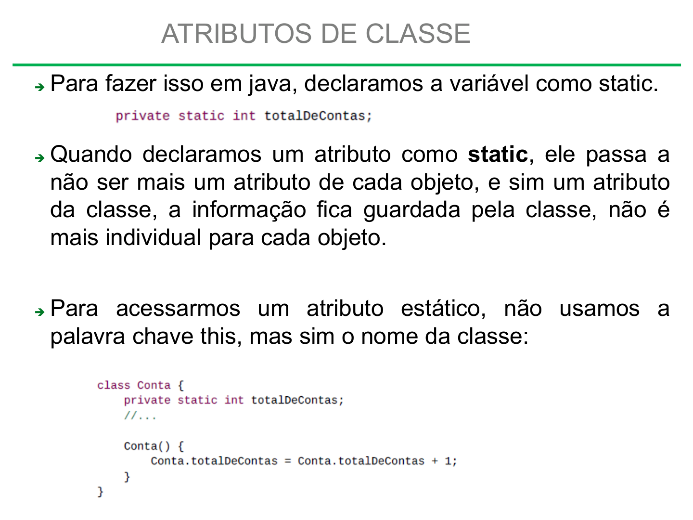
ATRIBUTOS DE CLASSE
➔Para fazer isso em java, declaramos a variável como static.
➔Quando declaramos um atributo como static, ele passa a não ser mais um atributo de cada objeto, e sim um atributo da classe, a informação fica guardada pela classe, não é mais individual para cada objeto.
➔Para acessarmos um atributo estático, não usamos a palavra chave this, mas sim o nome da classe:
Página 45
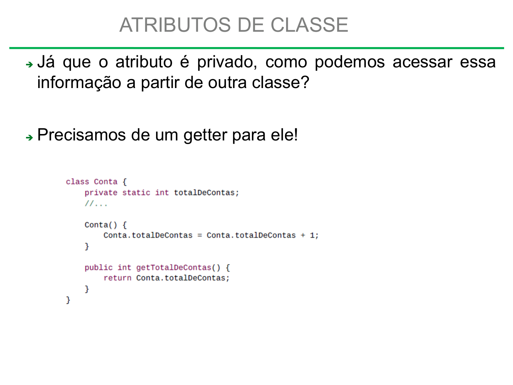
ATRIBUTOS DE CLASSE
➔Já que o atributo é privado, como podemos acessar essa informação a partir de outra classe?
➔Precisamos de um getter para ele!
Página 46
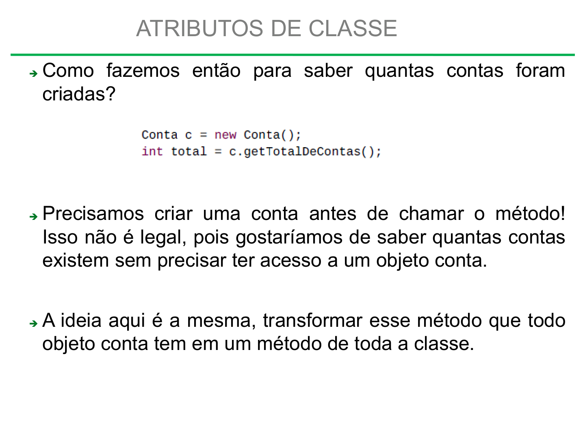
ATRIBUTOS DE CLASSE
➔Como fazemos então para saber quantas contas foram criadas?
➔Precisamos criar uma conta antes de chamar o método! Isso não é legal, pois gostaríamos de saber quantas contas existem sem precisar ter acesso a um objeto conta.
➔A ideia aqui é a mesma, transformar esse método que todo objeto conta tem em um método de toda a classe.
Página 47
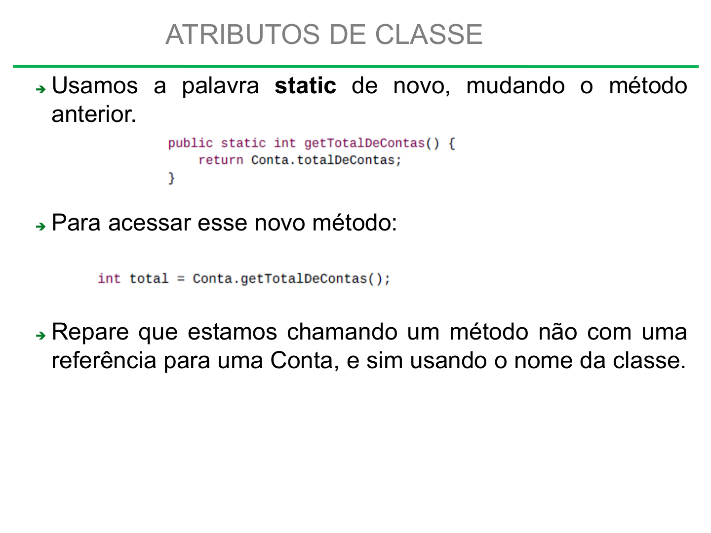
ATRIBUTOS DE CLASSE
➔Usamos a palavra static de novo, mudando o método anterior.
➔Para acessar esse novo método:
➔Repare que estamos chamando um método não com uma referência para uma Conta, e sim usando o nome da classe.
Página 48
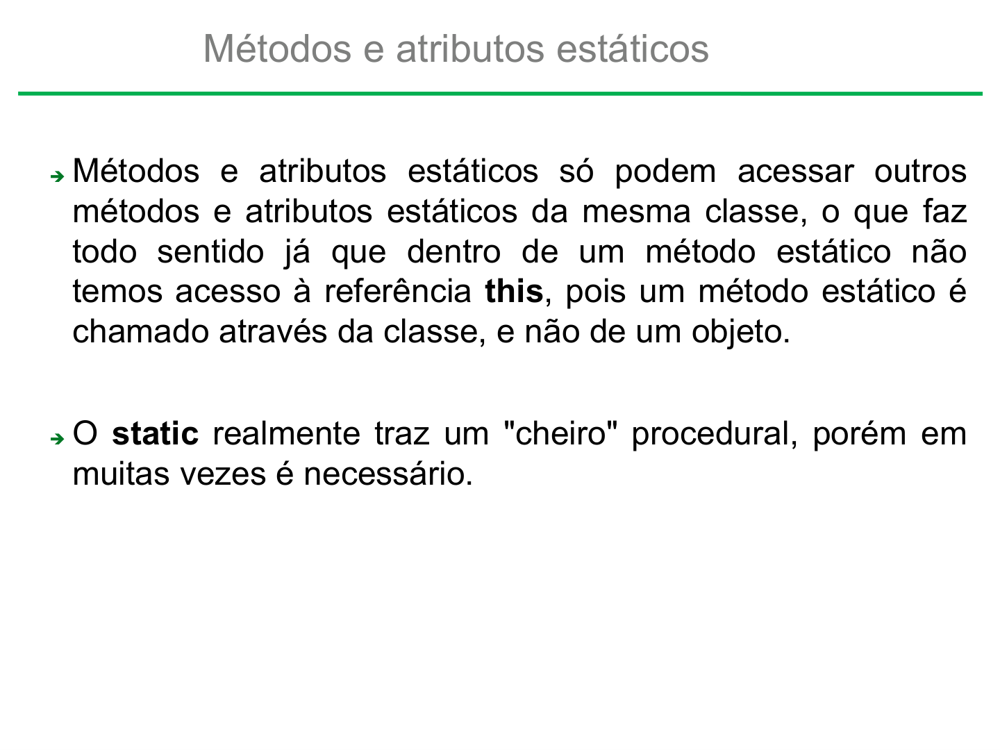
Métodos e atributos estáticos
➔Métodos e atributos estáticos só podem acessar outros métodos e atributos estáticos da mesma classe, o que faz todo sentido já que dentro de um método estático não temos acesso à referência this, pois um método estático é chamado através da classe, e não de um objeto.
➔O static realmente traz um “cheiro” procedural, porém em muitas vezes é necessário.
Página 49
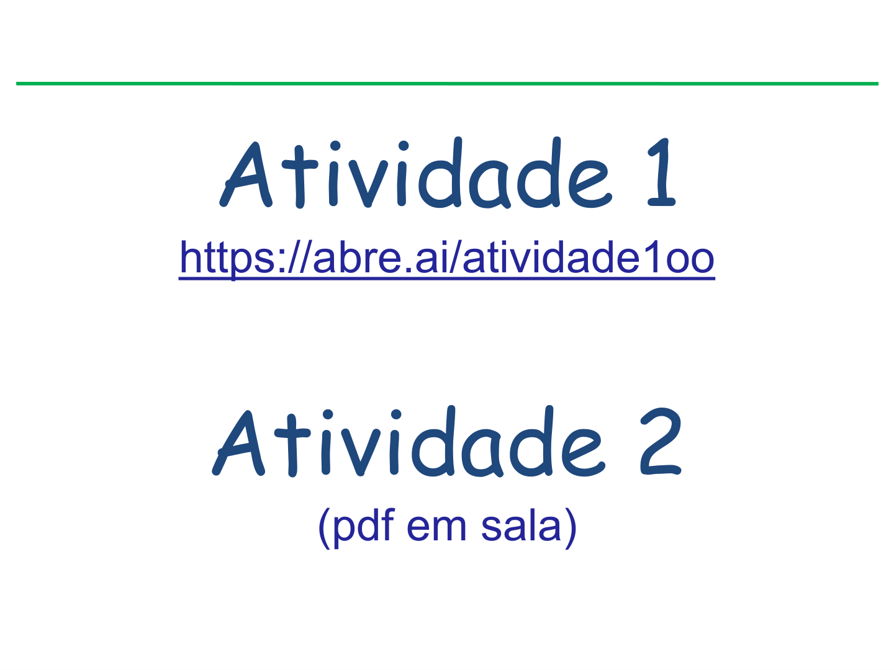
Atividade 1 https://abre.ai/atividade1oo
Atividade 2 (pdf em sala)
Página 50
Dúvidas
alana.neo@ifms.edu.br